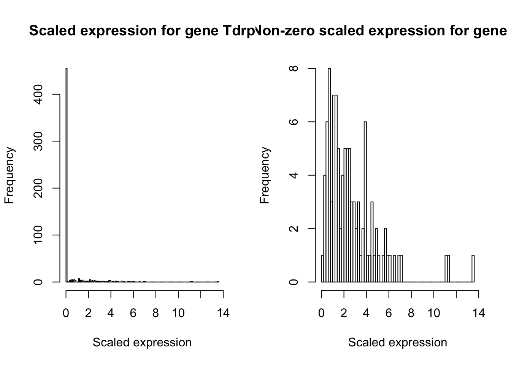

Gene expression distribution deconvolution on Zeisel Data
Mengyin Lu
2018-08-09
Last updated: 2018-08-12
workflowr checks: (Click a bullet for more information)-
✔ R Markdown file: up-to-date
Great! Since the R Markdown file has been committed to the Git repository, you know the exact version of the code that produced these results.
-
✔ Environment: empty
Great job! The global environment was empty. Objects defined in the global environment can affect the analysis in your R Markdown file in unknown ways. For reproduciblity it’s best to always run the code in an empty environment.
-
✔ Seed:
set.seed(20180705)The command
set.seed(20180705)was run prior to running the code in the R Markdown file. Setting a seed ensures that any results that rely on randomness, e.g. subsampling or permutations, are reproducible. -
✔ Session information: recorded
Great job! Recording the operating system, R version, and package versions is critical for reproducibility.
-
Great! You are using Git for version control. Tracking code development and connecting the code version to the results is critical for reproducibility. The version displayed above was the version of the Git repository at the time these results were generated.✔ Repository version: 6037e6e
Note that you need to be careful to ensure that all relevant files for the analysis have been committed to Git prior to generating the results (you can usewflow_publishorwflow_git_commit). workflowr only checks the R Markdown file, but you know if there are other scripts or data files that it depends on. Below is the status of the Git repository when the results were generated:
Note that any generated files, e.g. HTML, png, CSS, etc., are not included in this status report because it is ok for generated content to have uncommitted changes.Ignored files: Ignored: analysis/._index.Rmd Ignored: analysis/stem_cache/ Ignored: code/._deconvolution.R Ignored: code/._zinb.ipynb Ignored: code/._zinb.py Ignored: data/._BuettnerG2M.Rdata Ignored: data/._annotation.txt Ignored: data/._molecules.txt Ignored: data/._reads-bulk.txt Ignored: data/._zeisel.rds Ignored: data/._zeisel_multi.csv Ignored: docs/._genash.pdf Ignored: output/._res_zeisel.rds Ignored: output/._res_zeisel_zinb.csv Untracked files: Untracked: code/zinb.ipynb Untracked: code/zinb.py Untracked: data/zeisel_multi.csv Untracked: output/res_zeisel.rds Untracked: output/res_zeisel_zinb.csv
Expand here to see past versions:
| File | Version | Author | Date | Message |
|---|---|---|---|---|
| Rmd | 6037e6e | mengyin | 2018-08-12 | add Zeisel data analysis |
Data
Zeisel et al. described a scRNA-seq dataset of mouse hippocampal region. The dataset has read counts of 12234 genes in 3005 cells from the mouse somatosensory cortex and hippocampus CA1 region. The 3005 cells have been clustered into 7 major cell types: Astrocytes-Ependymal, Endothelial-Mural, Interneurons, Microglia, Oligodendrocytes, CA1 pyramidal and S1 pyramidal, and the number cells in each cell type are 224, 235, 290, 98, 820, 939 and 399 respectively. The dataset is publicly available at https://hemberg-lab.github.io/scRNA.seq.datasets/mouse/esc/.
Load data:
library(SingleCellExperiment)Warning: package 'GenomicRanges' was built under R version 3.5.1Warning: package 'DelayedArray' was built under R version 3.5.1library(readr)
source("code/deconvolution.R")
zeisel = readRDS("data/zeisel.rds")
# number of cells for different cell types
table(colData(zeisel)$cell_type1)
astrocytes ca1pyramidal endothelial ependymal
198 948 175 26
interneurons microglia mural oligodendrocytes
290 98 60 820
s1pyramidal
390 Choose the subset with cell types Astrocytes-Ependymal, Endothelial-Mural and Microglia:
mol_multi = counts(zeisel)[,colData(zeisel)$cell_type1 %in%
c("astrocytes","endothelial","ependymal","microglia","mural")]
types = colData(zeisel)$cell_type1[colData(zeisel)$cell_type1 %in%
c("astrocytes","endothelial","ependymal","microglia","mural")]
# number of genes and number of cells
dim(mol_multi)[1] 19972 557# compute scaling factors (normalized library sizes)
libsize_multi = colSums(mol_multi)
scale_multi = libsize_multi/mean(libsize_multi)Run deconvolution methods
We run DESCEND, Poisson ASH and nonparametric deconvolution for each gene.
res_multi = deconv_data(mol_multi, scale=scale_multi)
res_multi = data.frame(res_multi)
saveRDS(res_multi, file="output/res_zeisel.rds")We also run the ZINB deconvolution. The codes are implemented in Python, see here.
Results
res_multi = readRDS("output/res_zeisel.rds")
res_multi_zinb = read_csv("output/res_zeisel_zinb.csv")Warning: Missing column names filled in: 'X1' [1]res_multi_zinb = data.frame(res_multi_zinb[,-1], row.names=res_multi_zinb$X1)We compare the properties (mean, CV, \(\pi_0\), log-likelihood, etc.) of fitted prior \(\hat{G}\) by ZINB, DESCEND, Poisson ASH and nonparametric deconvolution.
Mean
Plot the fitted prior’s mean:
plot(log(res_multi$mean_ash), log(res_multi$mean_ashnonp),
xlab="Poisson ash", ylab="Nonparametric", main="Mean of G (log-log scale)",
xlim=c(-7,7),ylim=c(-7,7))
abline(0,1,col=2)plot(log(res_multi$mean_ash), log(res_multi$mean_descend),
xlab="Poisson ash", ylab="DESCEND", main="Mean of G (log-log scale)",
xlim=c(-7,7),ylim=c(-7,7))
abline(0,1,col=2)plot(log(res_multi$mean_ash), log(res_multi_zinb$mean_zinb),
xlab="Poisson ash", ylab="ZINB", main="Mean of G (log-log scale)",
xlim=c(-7,7),ylim=c(-7,7))
abline(0,1,col=2)Pearson correlation of the fitted prior mean between two methods:
cor(log(res_multi$mean_ash), log(res_multi_zinb$mean_zinb),use="complete.obs")[1] 0.9997957cor(log(res_multi$mean_ash), log(res_multi$mean_descend),use="complete.obs")[1] 0.999151cor(log(res_multi$mean_ash), log(res_multi$mean_ashnonp),use="complete.obs")[1] 0.9997037cor(log(res_multi_zinb$mean_zinb), log(res_multi$mean_descend),use="complete.obs")[1] 0.9992084compobs = (log(res_multi_zinb$mean_zinb)>-Inf & log(res_multi$mean_ashnonp)>-Inf)
cor(log(res_multi_zinb$mean_zinb)[compobs], log(res_multi$mean_ashnonp)[compobs])[1] 0.9998487cor(log(res_multi$mean_descend), log(res_multi$mean_ashnonp), use="complete.obs")[1] 0.9990106Log-likelihood
Compute the log-likelihood difference between two methods and the proportion of genes falling into the following 5 categories: \((-\infty, -5)\) (much lower), \((-5,-2)\) (significantly lower), \((-2,2)\) (similar), \((2,5)\) (significantly higher) and \((5,\infty)\) (much higher). We first compare the log-likelihood of the Poisson ASH unimodal model with that of the nonparametric deconvolution.
# loglike_ashuni is for the unimodal model with a positive mode,
# loglike_ashuni0 is for the unimodal model with mode at 0,
# we choose the model with higher log-likelihood as the optimal unimodal model
diff.nonp = res_multi$loglike_ashnonp-pmax(res_multi$loglike_ashuni,res_multi$loglike_ashuni0)
diff.nonp = diff.nonp[!is.na(diff.nonp)]
hist.nonp = hist(diff.nonp, breaks = c(min(diff.nonp),-5,-2,2,5,max(diff.nonp)),plot=FALSE)
round(hist.nonp$counts/sum(hist.nonp$counts)*100,2)[1] 0.13 0.13 98.94 0.79 0.01Then we check the scaled expression distribution for those genes where nonparametric deconvolution gives much higher log-likelihood than Poisson ASH (unimodal).
for (i in 1:6){
eg = mol_multi[order(pmax(res_multi$loglike_ashuni,res_multi$loglike_ashuni0)-res_multi$loglike_ash)[i],]
tab = table(eg, dnn="Y")
#print(tab)
genename = row.names(mol_multi)[order(pmax(res_multi$loglike_ashuni,res_multi$loglike_ashuni0)
- res_multi$loglike_ashnonp)[i]]
hist(eg/scale_multi,150, prob=TRUE, xlab="Scaled expression",
main=paste0("Scaled expression distribution for gene ",genename))
}The log-likelihood improvement upon the Poisson ASH unimodal model for these genes:
o = order(pmax(res_multi$loglike_ashuni,res_multi$loglike_ashuni0)
- res_multi$loglike_ashnonp)
tmp = cbind(res_multi,res_multi_zinb)[,c(5,10,27,35)]-pmax(res_multi$loglike_ashuni,res_multi$loglike_ashuni0)
# substract the baseline ash unimodal model's log-likelihood
round(tmp[o[1:6],],2) loglike_ashnonp loglike_ash loglike_descfull loglike_zinb
Atp1a2 5.61 0.00 -28.12 -18.23
C1qa 5.25 0.00 -8.97 -7.33
Eif4a1 4.92 4.35 3.78 -1.98
Ccl4 4.63 0.00 -214.15 -1.63
Cdc42 4.50 2.19 3.78 1.42
Klhl9 4.43 4.16 1.20 -7.64The fitted prior for these genes (by DESCEND or Poisson ASH) is shown below. The six genes display a common pattern that, the scaled expression histogram split the cells into zero expression and non-zero expression parts, with noticeable gap between them. This suggests us to consider a more flexible expression distribution in with a point mass at zero \(\delta_0\).
par(mfrow=c(1,2))
for (i in order(pmax(res_multi$loglike_ashuni,res_multi$loglike_ashuni0)
- res_multi$loglike_ashnonp)[1:6]){
tmp = deconv_sing(as.numeric(mol_multi[i,]), scale=scale_multi, plot.dens=TRUE, plot.cdf = TRUE)
}[1] "Compute penalized MLE, the 1th time"
[1] "c0 is 1"
[1] "Relative fake information is:0.57%"
[1] "Compute penalized MLE, the 2th time"
[1] "c0 is 1"
[1] "Relative fake information is:0.57%"
[1] "Compute LRT tests, in total 1 tests"
[1] "Compute LRT test, Full model"
[1] "neg loglikehood is 2234.80736602871 df is NA"
[1] "Compute LRT test, Nonzero fraction = 1"
[1] "neg loglikehood is 2323.6179304625 df is 1"[1] "Compute penalized MLE, the 1th time"
[1] "c0 is 1"
[1] "Relative fake information is:0.74%"
[1] "Compute penalized MLE, the 2th time"
[1] "c0 is 1"
[1] "Relative fake information is:0.74%"
[1] "Compute LRT tests, in total 1 tests"
[1] "Compute LRT test, Full model"
[1] "neg loglikehood is 658.956714111136 df is NA"
[1] "Compute LRT test, Nonzero fraction = 1"
[1] "neg loglikehood is 784.178947132785 df is 1"[1] "Compute penalized MLE, the 1th time"
[1] "c0 is 1"
[1] "Relative fake information is:2.06%"
[1] "c0 is 0.242292814503831"
[1] "Relative fake information is:0.38%"
[1] "Compute penalized MLE, the 2th time"
[1] "c0 is 0.242292814503831"
[1] "Relative fake information is:0.38%"
[1] "Compute LRT tests, in total 1 tests"
[1] "Compute LRT test, Full model"
[1] "neg loglikehood is 1218.69179281787 df is NA"
[1] "Compute LRT test, Nonzero fraction = 1"
[1] "neg loglikehood is 1223.49203410445 df is 1"[1] "Compute penalized MLE, the 1th time"
[1] "c0 is 1"
[1] "Relative fake information is:0.8%"
[1] "Compute penalized MLE, the 2th time"
[1] "c0 is 1"
[1] "Relative fake information is:0.8%"
[1] "Compute LRT tests, in total 1 tests"
[1] "Compute LRT test, Full model"
[1] "neg loglikehood is 626.052625428832 df is NA"
[1] "Compute LRT test, Nonzero fraction = 1"
[1] "neg loglikehood is 739.093127589323 df is 1"[1] "Compute penalized MLE, the 1th time"
[1] "c0 is 1"
[1] "Relative fake information is:2.12%"
[1] "c0 is 0.235872736203665"
[1] "Relative fake information is:0.33%"
[1] "Compute penalized MLE, the 2th time"
[1] "c0 is 0.235872736203665"
[1] "Relative fake information is:0.33%"
[1] "Compute LRT tests, in total 1 tests"
[1] "Compute LRT test, Full model"
[1] "neg loglikehood is 1297.44569043771 df is NA"
[1] "Compute LRT test, Nonzero fraction = 1"
[1] "neg loglikehood is 1301.73382368463 df is 1"[1] "Compute penalized MLE, the 1th time"
[1] "c0 is 1"
[1] "Relative fake information is:0.98%"
[1] "Compute penalized MLE, the 2th time"
[1] "c0 is 1"
[1] "Relative fake information is:0.98%"
[1] "Compute LRT tests, in total 1 tests"
[1] "Compute LRT test, Full model"
[1] "neg loglikehood is 547.059670574505 df is NA"
[1] "Compute LRT test, Nonzero fraction = 1"
[1] "neg loglikehood is 551.302272729941 df is 1"
Next, we compare the log-likelihood of the methods with \(\delta_0\): Poisson ASH (\(\delta_0\) plus a unimodal prior), DESCEND, ZINB and nonparametric deconvolution. We compute the log-likelihood difference between Poisson ASH and the other three methods and the proportions of falling into 5 categories: \((-\infty, -5)\) (much lower), \((-5,-2)\) (significantly lower), \((-2,2)\) (similar), \((2,5)\) (significantly higher) and \((5,\infty)\) (much higher).
diff.zinb = res_multi_zinb$loglike_zinb-res_multi$loglike_ash
diff.zinb = diff.zinb[!is.na(diff.zinb)]
hist.zinb = hist(diff.zinb, breaks = c(min(diff.zinb),-5,-2,2,5,max(diff.zinb)),plot=FALSE)
round(hist.zinb$counts/sum(hist.zinb$counts)*100,2)[1] 2.43 12.09 85.48 0.01 0.00diff.desc = res_multi$loglike_descfull-res_multi$loglike_ash
diff.desc = diff.desc[!is.na(diff.desc)]
hist.desc = hist(diff.desc, breaks = c(min(diff.desc),-5,-2,2,5,max(diff.desc)),plot=FALSE)
round(hist.desc$counts/sum(hist.desc$counts)*100,2)[1] 6.26 7.71 85.93 0.09 0.01diff.nonp = res_multi$loglike_ashnonp-res_multi$loglike_ash
diff.nonp = diff.nonp[!is.na(diff.nonp)]
hist.nonp = hist(diff.nonp, breaks = c(min(diff.nonp),-5,-2,2,5,max(diff.nonp)),plot=FALSE)
round(hist.nonp$counts/sum(hist.nonp$counts)*100,2)[1] 0.13 0.11 99.02 0.72 0.01Check those genes where DESCEND’s log-likelihood is much higher than Poisson ASH. See if there are multimodal patterns for these genes such that Poisson ASH is insufficient.
par(mfrow=c(1,2))
for (i in 1:5){
eg = mol_multi[order(res_multi$loglike_ash - res_multi$loglike_descfull)[i],]
genename = row.names(mol_multi)[order(res_multi$loglike_ash -
res_multi$loglike_descfull)[i]]
eg_scaled = eg/scale_multi
hist(eg_scaled,150, xlab="Scaled expression",
main=paste0("Scaled expression for gene ",genename))
hist(eg_scaled[eg_scaled>0],50, xlab="Scaled expression",
main=paste0("Non-zero scaled expression for gene ",genename))
}
Then plot the fitted prior by DESCEND and Poisson ASH for these genes. The cdf plots indicate that for genes Nek7, Agpat3, Tdrp and Gak, DESCEND puts a much heavier probability mass on the right tail outside the x-axis range than Poisson ASH, which is actually unconvincing according to the above original scaled expression histogram.
par(mfrow=c(1,2))
for (i in order(res_multi$loglike_ash - res_multi$loglike_descfull)[1:5]){
tmp = deconv_sing(as.numeric(mol_multi[i,]), scale=scale_multi, plot.dens=TRUE, plot.cdf = TRUE)
}[1] "Compute penalized MLE, the 1th time"
[1] "c0 is 1"
[1] "Relative fake information is:2.03%"
[1] "c0 is 0.245779354616191"
[1] "Relative fake information is:0.76%"
[1] "Compute penalized MLE, the 2th time"
[1] "c0 is 0.245779354616191"
[1] "Relative fake information is:0.76%"
[1] "Compute LRT tests, in total 1 tests"
[1] "Compute LRT test, Full model"
[1] "neg loglikehood is 338.108319548497 df is NA"
[1] "Compute LRT test, Nonzero fraction = 1"
[1] "neg loglikehood is 342.014797319523 df is 1"[1] "Compute penalized MLE, the 1th time"
[1] "c0 is 1"
[1] "Relative fake information is:3.42%"
[1] "c0 is 0.146105931134089"
[1] "Relative fake information is:0.62%"
[1] "Compute penalized MLE, the 2th time"
[1] "c0 is 0.146105931134089"
[1] "Relative fake information is:0.62%"
[1] "Compute LRT tests, in total 1 tests"
[1] "Compute LRT test, Full model"
[1] "neg loglikehood is 470.878808566412 df is NA"
[1] "Compute LRT test, Nonzero fraction = 1"
[1] "neg loglikehood is 470.96483996469 df is 1"[1] "Compute penalized MLE, the 1th time"
[1] "c0 is 1"
[1] "Relative fake information is:3.42%"
[1] "c0 is 0.146230493990446"
[1] "Relative fake information is:0.32%"
[1] "Compute penalized MLE, the 2th time"
[1] "c0 is 0.146230493990446"
[1] "Relative fake information is:0.32%"
[1] "Compute LRT tests, in total 1 tests"
[1] "Compute LRT test, Full model"
[1] "neg loglikehood is 108.367637473024 df is NA"
[1] "Compute LRT test, Nonzero fraction = 1"
[1] "neg loglikehood is 128.780116865911 df is 1"[1] "Compute penalized MLE, the 1th time"
[1] "c0 is 1"
[1] "Relative fake information is:1.62%"
[1] "c0 is 0.309382786246412"
[1] "Relative fake information is:0.64%"
[1] "Compute penalized MLE, the 2th time"
[1] "c0 is 0.309382786246412"
[1] "Relative fake information is:0.64%"
[1] "Compute LRT tests, in total 1 tests"
[1] "Compute LRT test, Full model"
[1] "neg loglikehood is 433.676626716483 df is NA"
[1] "Compute LRT test, Nonzero fraction = 1"
[1] "neg loglikehood is 434.843658037773 df is 1"[1] "Compute penalized MLE, the 1th time"
[1] "c0 is 1"
[1] "Relative fake information is:2.03%"
[1] "c0 is 0.245710528453862"
[1] "Relative fake information is:0.88%"
[1] "Compute penalized MLE, the 2th time"
[1] "c0 is 0.245710528453862"
[1] "Relative fake information is:0.88%"
[1] "Compute LRT tests, in total 1 tests"
[1] "Compute LRT test, Full model"
[1] "neg loglikehood is 308.3651306127 df is NA"
[1] "Compute LRT test, Nonzero fraction = 1"
[1] "neg loglikehood is 312.691412911858 df is 1"Now we check if the sub-population structure of cell types could result in multimodal patterns, take gene Agpat3 as example:
idx = 2
Y = mol_multi[order(res_multi$loglike_ash - res_multi$loglike_descfull)[idx],]
genename = row.names(mol_multi)[order(res_multi$loglike_ash -
res_multi$loglike_descfull)[idx]]
Y_scaled = Y/scale_multi
types1 = types[Y_scaled>0]
Y_scaled = Y_scaled[Y_scaled>0]
plot(Y_scaled[types1=="microglia"],rep(0,sum(types1=="microglia")),
axes=FALSE, ylab="",xlab="scaled expression",pch=1, col="grey20",
xlim=c(0,max(Y_scaled)), ylim=c(-0.5,5),
main=paste0("Scaled expression for gene ",genename,", grouped by cell type"))
points(Y_scaled[types1=="endothelial"],rep(1,sum(types1=="endothelial")),pch=1, col="grey20")
points(Y_scaled[types1=="astrocytes"],rep(2,sum(types1=="astrocytes")),pch=1, col="grey20")
points(Y_scaled[types1=="ependymal"],rep(3,sum(types1=="ependymal")),pch=1, col="grey20")
points(Y_scaled[types1=="mural"],rep(4,sum(types1=="mural")),pch=1, col="grey20")
axis(2, 0:4, labels=c("microglia","endothelial","astrocytes","ependymal","mural"),
las=1)
axis(1, seq(0, max(Y_scaled)+1, 1))The most notable difference in scaled expression distribution among different cell types is in the tail shape. The scaled expression distribution of Astrocytes cells yields significantly longer tail than that of Ependymal and Microglia, and also shows a rough bimodal pattern with two major parts split at 3. On the other hand, the scaled expression levels for Microglia and Ependymal cells are quite low and concentrated, and the scaled expression of Mural cells is either smaller than 3 or bigger than 9. This example shows that the scaled expression seems to have different spreads for different cell types, rather than yielding different mode/average levels. The bimodal pattern within Astrocytes mainly contributes to the overall “bimodal” scaled expression distribution, while the differences in expression distribution among the other cell types seem to be determined mainly by spreads.
Note that in Poisson ASH, the prior \(H_g\) consists of many uniform mixture components with different widths (anchored at same mode). Even though the mixture components were not specifically designed for clustering sub-populations, their various spreads seem to corroborate the phenomenon described above, in that different sub-populations have tails with differing lengths.
CV
Compare the coefficient of variation (CV) of fitted prior:
plot(res_multi$cv_ash, res_multi$cv_ashnonp,
xlab="Poisson ash", ylab="Nonparametric", main="CV of G",
xlim=c(0,50),ylim=c(0,50))
abline(0,1,col=2)plot(res_multi$cv_ash, res_multi$cv_descend,
xlab="Poisson ash", ylab="DESCEND", main="CV of G",
xlim=c(0,50),ylim=c(0,50))
abline(0,1,col=2)
plot(res_multi$cv_ash, res_multi_zinb$cv_zinb,
xlab="Poisson ash", ylab="ZINB", main="CV of G",
xlim=c(0,50),ylim=c(0,50))
abline(0,1,col=2)After removing genes with less than 5 expressed cells:
compobs = (rowSums(mol_multi>0)>=5)
plot(res_multi$cv_ash[compobs], res_multi$cv_ashnonp[compobs],
xlab="Poisson ash", ylab="Nonparametric", main="CV of G (filtered data)",
xlim=c(0,50),ylim=c(0,50))
abline(0,1,col=2)plot(res_multi$cv_ash[compobs], res_multi$cv_descend[compobs],
xlab="Poisson ash", ylab="DESCEND", main="CV of G (filtered data)",
xlim=c(0,50),ylim=c(0,50))
abline(0,1,col=2)plot(res_multi$cv_ash[compobs], res_multi_zinb$cv_zinb[compobs],
xlab="Poisson ash", ylab="ZINB", main="CV of G (filtered data)",
xlim=c(0,50),ylim=c(0,50))
abline(0,1,col=2)Pearson correlation of fitted prior CV between two methods (after removing genes with less than 5 expressed cells):
cor(res_multi$cv_ash[compobs], res_multi_zinb$cv_zinb[compobs],use="complete.obs")[1] 0.9718503cor(res_multi$cv_ash[compobs], res_multi$cv_descend[compobs],use="complete.obs")[1] 0.9228191cor(res_multi$cv_ash[compobs], res_multi$cv_ashnonp[compobs],use="complete.obs")[1] 0.9905929cor(res_multi_zinb$cv_zinb[compobs], res_multi$cv_descend[compobs],use="complete.obs")[1] 0.9452119cor(res_multi_zinb$cv_zinb[compobs], res_multi$cv_ashnonp[compobs],use="complete.obs")[1] 0.9589812cor(res_multi$cv_descend[compobs], res_multi$cv_ashnonp[compobs], use="complete.obs")[1] 0.9198512Zero fraction \(\pi_0\)
Compare the zero fraction of fitted prior \(\hat{\pi}_0\):
plot(res_multi$pi0_ash, res_multi$pi0_ashnonp,
xlab="Poisson ash", ylab="Nonparametric", main="Null proportion of G",
xlim=c(0,1),ylim=c(0,1))
abline(0,1,col=2)plot(res_multi$pi0_ash, res_multi$pi0_descend,
xlab="Poisson ash", ylab="DESCEND", main="Null proportion of G",
xlim=c(0,1),ylim=c(0,1))
abline(0,1,col=2)
plot(res_multi$pi0_ash, res_multi_zinb$pi0_zinb,
xlab="Poisson ash", ylab="ZINB", main="Null proportion of G",
xlim=c(0,1),ylim=c(0,1))
abline(0,1,col=2)After removing genes with less than 5 expressed cells:
plot(res_multi$pi0_ash[compobs], res_multi$pi0_ashnonp[compobs],
xlab="Poisson ash", ylab="Nonparametric", main="Null proportion of G",
xlim=c(0,1),ylim=c(0,1))
abline(0,1,col=2)plot(res_multi$pi0_ash[compobs], res_multi$pi0_descend[compobs],
xlab="Poisson ash", ylab="DESCEND", main="Null proportion of G",
xlim=c(0,1),ylim=c(0,1))
abline(0,1,col=2)plot(res_multi$pi0_ash[compobs], res_multi_zinb$pi0_zinb[compobs],
xlab="Poisson ash", ylab="ZINB", main="Null proportion of G",
xlim=c(0,1),ylim=c(0,1))
abline(0,1,col=2)Session information
sessionInfo()R version 3.5.0 (2018-04-23)
Platform: x86_64-apple-darwin15.6.0 (64-bit)
Running under: macOS High Sierra 10.13.3
Matrix products: default
BLAS: /Library/Frameworks/R.framework/Versions/3.5/Resources/lib/libRblas.0.dylib
LAPACK: /Library/Frameworks/R.framework/Versions/3.5/Resources/lib/libRlapack.dylib
locale:
[1] en_US.UTF-8/en_US.UTF-8/en_US.UTF-8/C/en_US.UTF-8/en_US.UTF-8
attached base packages:
[1] parallel stats4 stats graphics grDevices utils datasets
[8] methods base
other attached packages:
[1] descend_0.0.0.9000 ashr_2.2-8
[3] readr_1.1.1 SingleCellExperiment_1.2.0
[5] SummarizedExperiment_1.10.1 DelayedArray_0.6.2
[7] BiocParallel_1.14.2 matrixStats_0.54.0
[9] Biobase_2.40.0 GenomicRanges_1.32.6
[11] GenomeInfoDb_1.16.0 IRanges_2.14.10
[13] S4Vectors_0.18.3 BiocGenerics_0.26.0
loaded via a namespace (and not attached):
[1] splines_3.5.0 lattice_0.20-35 htmltools_0.3.6
[4] yaml_2.2.0 rlang_0.2.1 R.oo_1.22.0
[7] pillar_1.3.0 R.utils_2.6.0 GenomeInfoDbData_1.1.0
[10] foreach_1.4.4 stringr_1.3.1 zlibbioc_1.26.0
[13] MatrixModels_0.4-1 workflowr_1.1.1 R.methodsS3_1.7.1
[16] codetools_0.2-15 evaluate_0.11 knitr_1.20
[19] SparseM_1.77 doParallel_1.0.11 pscl_1.5.2
[22] quantreg_5.36 Rcpp_0.12.18 backports_1.1.2
[25] XVector_0.20.0 truncnorm_1.0-8 hms_0.4.2
[28] digest_0.6.15 stringi_1.2.4 grid_3.5.0
[31] rprojroot_1.3-2 tools_3.5.0 bitops_1.0-6
[34] magrittr_1.5 RCurl_1.95-4.11 tibble_1.4.2
[37] crayon_1.3.4 whisker_0.3-2 pkgconfig_2.0.1
[40] MASS_7.3-50 Matrix_1.2-14 SQUAREM_2017.10-1
[43] assertthat_0.2.0 rmarkdown_1.10 rstudioapi_0.7
[46] iterators_1.0.10 R6_2.2.2 git2r_0.23.0
[49] compiler_3.5.0 This reproducible R Markdown analysis was created with workflowr 1.1.1